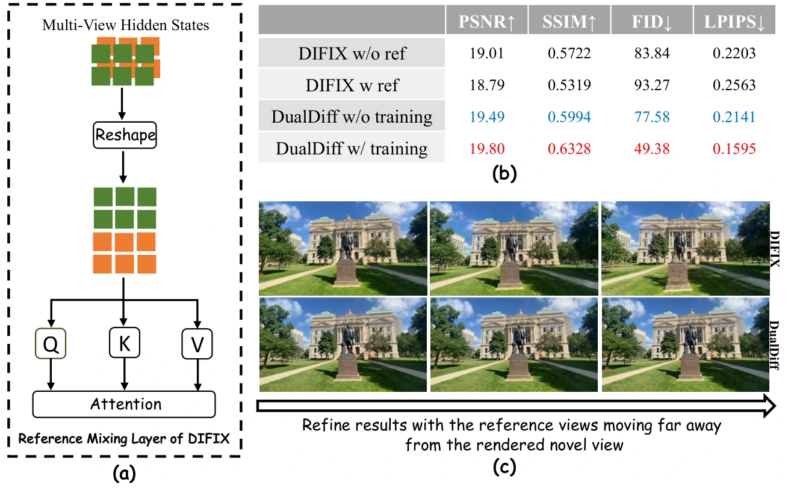
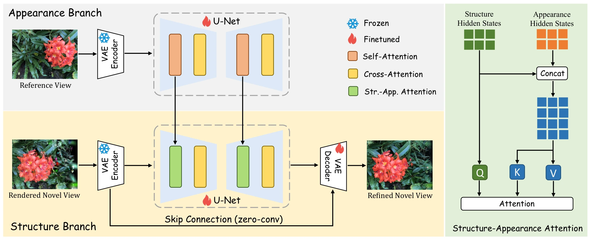
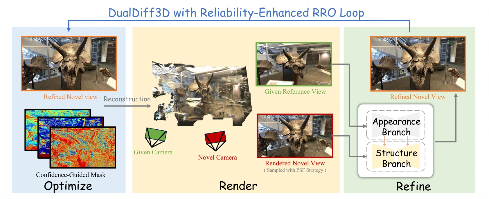
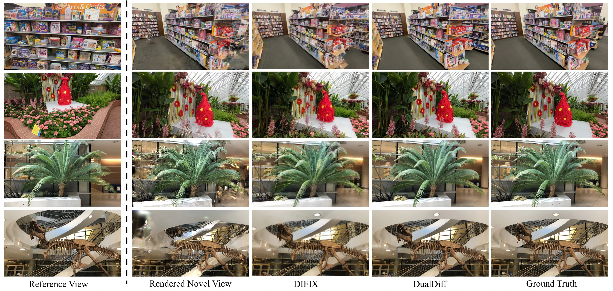
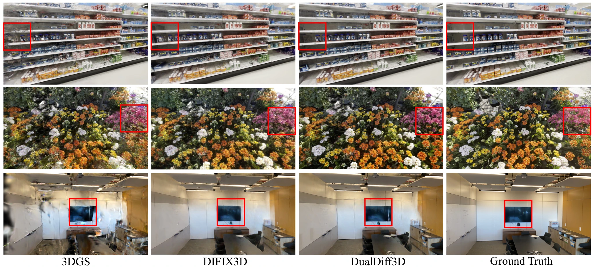

PSNR over DIFIX3D
ECCV 2026
DualDiff3D: Dual Structure-Appearance Diffusion Priors for Reliability-Enhanced 3D Gaussian Splatting
Decoupling structure and appearance for sharper, more reliable sparse-view 3D reconstruction.
Peking University
Pengcheng Laboratory
Guangdong Provincial Key Laboratory of UHD Immersive Media Technology
Video comparison
Explore the reconstruction results.
Compare synchronized novel-view renderings from 3DGS, DIFIX3D, and DualDiff3D.
Ours
All three videos are synchronized. Click any video or use the control to pause and inspect details.
Overview
One prior for structure. One prior for appearance.
Sparse input views leave 3D Gaussian Splatting with incomplete geometry and conspicuous artifacts. Existing diffusion-based refiners mix rendered and reference views in one network, despite their fundamentally different roles: a rendered view defines structure, while reference views provide appearance.
We introduce DualDiff, a two-branch refinement pipeline connected by Structure-Appearance Attention. A dedicated structure branch preserves the viewpoint, layout, and geometric correspondence of low-quality novel views, while an appearance branch supplies textures, colors, and details from reference images. Structural queries attend to both structural and appearance features, introducing reference guidance without sacrificing viewpoint consistency.
Building on this refinement model, DualDiff3D uses a reliability-enhanced Render-Refine-Optimize loop to turn refined novel views into stronger 3D supervision. Progressive sampling and filtering selects useful nearby viewpoints, confidence-driven weighting evaluates reliability at the pixel level, and validation with rollback prevents unstable updates from degrading the reconstruction.
Method
Separate first. Fuse with purpose.
DualDiff resolves the conflict between viewpoint-dependent geometry and view-consistent appearance.



Results
Quantitative and qualitative comparisons.

PSNR over DIFIX3D
per image on RTX 4090
best DL3DV & LLFF core metrics

Citation
Build on DualDiff3D.
If this work is useful for your research, please cite our ECCV 2026 paper.
@inproceedings{wang2026dualdiff3d,
title = {DualDiff3D: Dual Structure-Appearance Diffusion
Priors for Reliability-Enhanced 3D Gaussian Splatting},
author = {Qian Wang and Yu Wang and Weiqi Li and Xinhua Cheng
and Xiandong Meng and Ronggang Wang and Jian Zhang},
booktitle = {European Conference on Computer Vision (ECCV)},
year = {2026},
month = {jun}
}